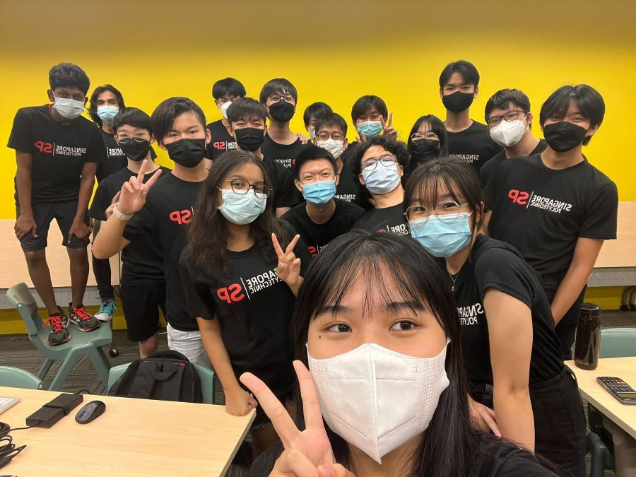

Singapore Polytechnic Experience
View first impressions and things about Singapore Polytechnic

View first impressions and things about Singapore Polytechnic
My first impression of Singapore Polytechnic was fairly exciting . On my first day , i got lost trying to find my way to my class as my class was at T22 level 5 which is not even close to SOC classes . Thankfully there were two girls who helped me find way to my class. I was greeted by welcoming friends and GLs . Although freshman orientation was short , i will forever remember the happy times .We all bonded nicely . Not only that , Singapore Polytechnic has really cool labs and places for students to explore such as the Fab Lab and Libfrary


My class consists of 19 people and i could not have asked for a better class . All my classmates are very helpful and welcoming to each other . we all enjoy studying together and spending time together . The clasrooms in Singapore Polytechnic are a joy to study in. There are smooth tables and chairs with powerful air conditioning that gives the perfect environment to study in . This is very different from Secondary School as in Secondary Sxhool we had 40 people in a class with fans which used to get very stufffy and humid
Lesson is SP are very condusive due to the air conditioning . However , with weeks passing lessons are getting harder and need more commitment . Unlike secondary school where teachers check up on us , in Poly its our responsibility to do our assignments and hand in on time . Lessons are much more intensive and self directed and with CA2 coming closer the pressure is building up. I still do enjoy mu lessons as my teachers always help me when i need help and sos do my friends
Singapore Polytechnic has a wide variety of food. I usually go to Fc6 and Fc4 because they are the closest to my class. My personal favorites are the Samyang Carbona and Waffel with the ice cream. They always hIt the spot. My favorite in FC4 is the chicken rice beacuse its cheap and tasty . I hope to try the other Fcs in the future !!!
Well, SP is really big and I have just only explored a small part of it (sometimes I still get lost) so in the next 3 years of polytechnic life, there is a lot for me to explore. Academics-wise, I will put in 100% in every assignment, hopefully, I can get a good GPA in the end, continue my studies and eventually achieve my dream.